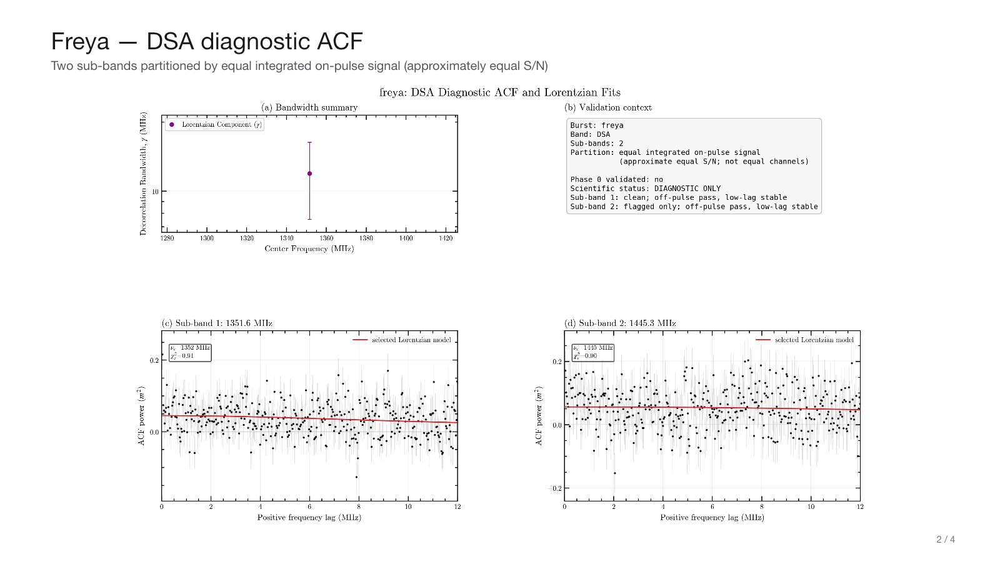
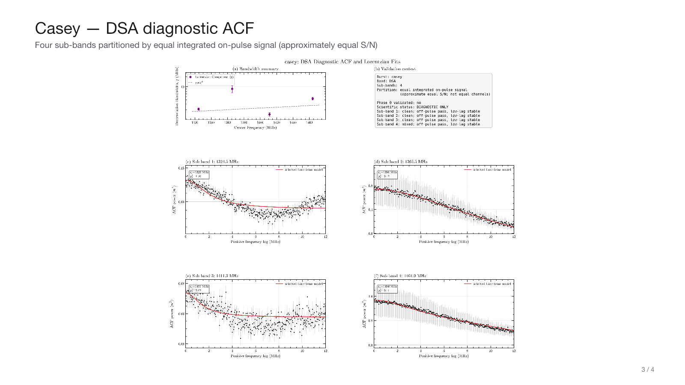
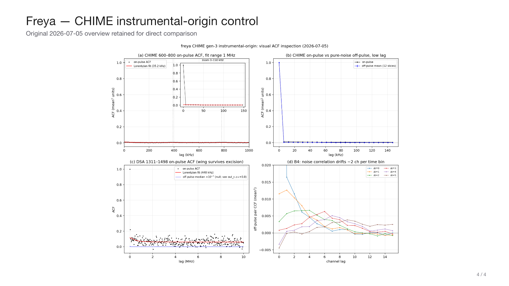

Scintillation revalidation — DSA diagnostics + CHIME instrumental control
Faber2026 · July 2026 · DIAGNOSTIC ONLY · Phase 0 validation pending
Two sub-bands · equal integrated on-pulse signal · approximately equal S/N

Four sub-bands · equal integrated on-pulse signal · approximately equal S/N

Original 2026-07-05 overview retained for direct comparison
